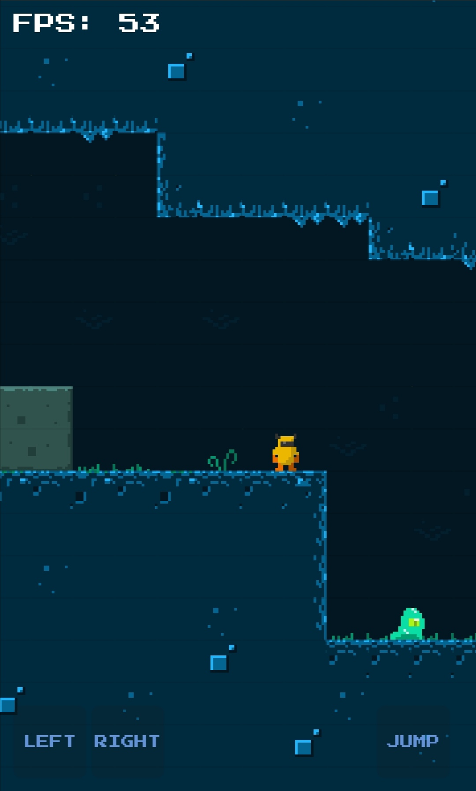
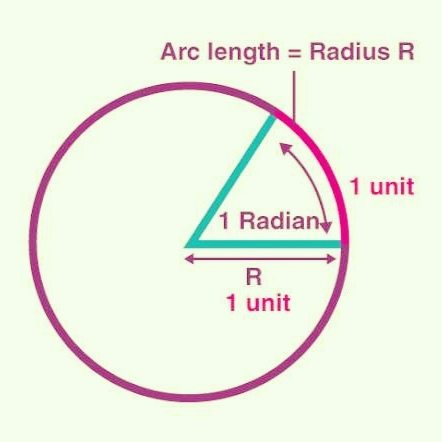

What is canvas?
So first of all we will discuss about what is canvas and why we use canvas?
Canvas element is the html5 element. We can draw 2d graphics in it. We can draw graphics in canvas only using javascript.
Uses of canvas :
— It is used to make games like mario, tetris, runner games, puzzle games, trex games and many other games too
— It is used to make animations
— It is used to make drawing
— It is used to make tools and simple app like paint app, matrix code generator etc.
Grotto Escape Game

Pumpkin Head Runner Game created by Luis calderon in canvas
How to setup canvas element?
First create canvas tag in body
<canvas></canvas>Select the canvas element in javascript
const canvas = document.querySelector("canvas");The context is an object which contains all the functions and properties which is used to draw graphics in canvas. getContext() function is used to select context
const context = canvas.getContext("2d");Set the width and height of canvas
canvas.width = 300;
canvas.height = 300;Note: Use window.innerWidth/innerWidth and window.innerHeight/innerHeight to set 100% viewport width and height
canvas.width = innerWidth;
canvas.height = innerHeight;What is context.beginPath()
beginPath() is used to create new shape path or to reset current path. By calling this function and drawing new shape or path will not get affected by previous properties.
context.beginPath();How to draw shapes?
Rectangle
fillStyle and fillRect() are used to draw rectangle :-
— fillStyle property is used to fill the shape with the given color and strokeStyle property is used to give color to the stroke of the shape
— fillRect() function takes four arguments and that is :-
context.fillRect(x_position, y_position, width, height);Example :-
// fill rectangle
context.fillStyle = "red";
context.fillRect(10, 15, 30, 60);
Note: strokeStyle and strokeRect() are used to draw stroke rectangle
Example :-
// stroke rectangle
context.strokeStyle = "#ff0044";
context.strokeRect(50, 20, 60, 20);
Note: Take a look at live example at bottom to understand better
Cirlce
fillStyle/strokeStyle property, arc() and fill()/stroke() are used to draw circle
— fillStyle property is used to fill the shape with the given color and strokeStyle property is used to give color to the stroke of the shape
— arc() is used to draw a circular arc. It takes six arguments :-
context.arc(x, y, radius, startAngle[in radians], endAngle[in radians], [false for clockwise or true for counterclockwise]);— fill() is used to fill the circle and stroke() is used to draw stroke circle
Note: π = 180°. So, 2π = 360°
How to convert angle to radians
We know that π = 180°. So, π/180 = 1° in radians and (π/180) * degree(like 40, 138) = degree in radians
function convertToRadians(degree) {
return (-Math.PI/180) * degree;
}Let's take a look at example
Note: You can change the code
// fill rectangle
context.beginPath();
context.fillStyle = "dodgerblue";
context.fillRect(10, 15, 30, 60);
// stroke rectangle
context.beginPath();
context.strokeStyle = "#ff0044";
context.strokeRect(120, 20, 60, 20);
// fill circle
context.beginPath();
context.fillStyle = "#00ffa5";
context.arc(60, 125, 25, 0, Math.PI * 2, false);
context.fill();
// stroke circle
context.beginPath();
context.strokeStyle = "#0010ff";
context.arc(80, 205, 25, 0, Math.PI * 2, false);
context.stroke();
// function to convert angle to radians
function convertToRadians(degree) {
return (-Math.PI/180) * degree;
}
// lets create a circular stroke arc between 0° to 235°
context.beginPath();
context.strokeStyle = "#8d00ff";
context.arc(150, 130, 30, convertToRadians(235), 0, false);
context.stroke();